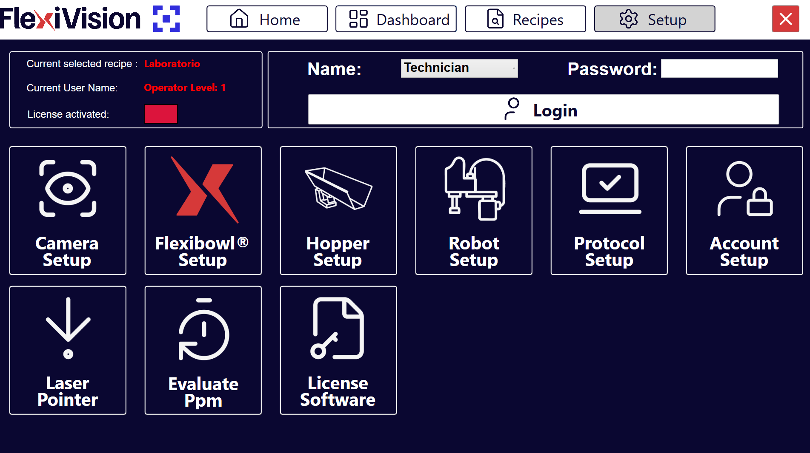
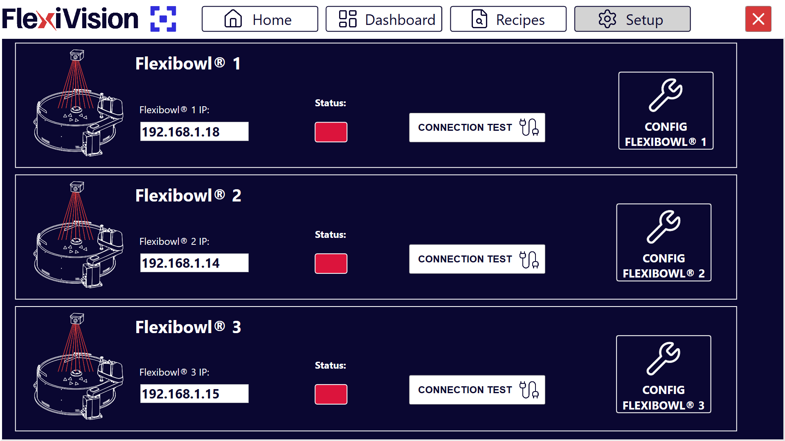
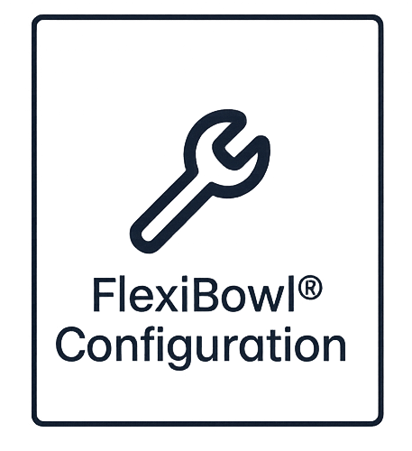

Passo 4: FlexiBowl Setup#
Questa sezione descrive la procedura per connettere e configurare il FlexiBowl con il sistema FlexiVision One.
Note
Prerequisiti
Assicurarsi che:
L’installazione meccanica di tutti i componenti sia completata (Installazione Meccanica)
Tutti i cavi siano collegati correttamente (Cablaggio e Connessioni)
Accesso alla configurazione FlexiBowl#
1 |
Dalla pagina principale del software, cliccare su |
2 |
Nella pagina SETUP, identificare e cliccare sull’icona FlexiBowl Setup Pagina Setup |
3 |
Si apre la schermata di configurazione dei FlexiBowl |


#Procedura di connessione#
Step 1: Configurazione indirizzo di rete#
4 |
Verificare che l’indirizzo sia sulla stessa subnet del VisionController |
5 |
Nel campo FlexiBowl IP, inserire l’indirizzo IP del FlexiBowl
|
Tip
Per comodità e coerenza, partire dal primo FlexiBowl disponibile
Note
Il FlexiBowl viene spedito con indirizzo IP di default 192.168.1.10
Step 2: Test di connessione#
6 |
Dopo aver inserito l’IP, cliccare sul pulsante Connection Test |
7 |
Il sistema esegue un test di comunicazione (ping) verso il FlexiBowl |
8 |
Osservare l’indicatore di Status:
|
Warning
Connessione fallita
Se l’indicatore rimane rosso o appare un messaggio di errore:
Verificare di aver acceso il FlexiBowl
Verificare che l’indirizzo IP inserito sia corretto
Controllare fisicamente il cavo Ethernet (deve essere inserito completamente)
Se presente,verificare che lo switch/router di rete sia acceso
Assicurarsi che FlexiBowl e VisionController siano sulla stessa subnet
Provare a pingare il FlexiBowl da terminale Windows:
Aprire Prompt dei comandi
Digitare:
ping 192.168.1.XXX(sostituire con IP effettivo)Se il ping fallisce, si tratta di un problema di rete
Se il problema persiste, consultare Troubleshooting.
Configurazione parametri FlexiBowl#
Una volta stabilita la connessione, procedere con la configurazione dei parametri operativi.
Step 3: Accesso configurazione#
9 |
Cliccare sul pulsante  |
10 |
Si apre una finestra con i parametri configurabili del FlexiBowl |
Step 5: Sincronizzazione parametri#
12 |
Cliccare su Synchronize Parameters |
13 |
Tornare alla pagina SETUP principale per procedere con il setup successivo |
Warning
Non saltare la sincronizzazione
È fondamentale cliccare su Synchronize Parameters dopo ogni modifica. Senza questo passaggio:
Le modifiche non vengono applicate al FlexiBowl
Il sistema potrebbe comportarsi in modo incoerente
Le impostazioni non vengono salvate
Configurazione guidata: FlexiBowl® Wizard#
L’interfaccia FlexiBowl® Wizard è uno strumento interattivo progettato per guidare l’utente nella configurazione dei parametri di alimentazione in base alla specifica famiglia di prodotti da gestire.
Step 1: Accesso al Wizard#
Per avviare la procedura:
1 |
Recarsi nella sezione |
2 |
Cliccare sul pulsante FlexiBowl Setup, si aprirà una pagina con tutti i FlexiBowl gestibili con FlexiVision One Pagina FlexiBowl Setup
|
3 |
Cliccare sul pulsante Pagina Configurazione FlexiBowl
|
4 |
Cliccare sul pulsante FlexiBowl X Wizard, si aprirà una pagina di benvenuto al Wizard |
5 |
Cliccare su Note Cliccare |
 del software FlexiVision
del software FlexiVision
Step 2: Selezione Modello e Rotazione#
In questa fase si definiscono le caratteristiche hardware del sistema:
6 |
Selezionare la taglia del dispositivo (es. 200, 350, 500, ecc.). |
7 |
Definire il senso di rotazione del disco (Clockwise o CounterClockwise). |
Step 3: Caratterizzazione del Componente#
Il sistema richiede informazioni sulla morfologia dei pezzi per ottimizzare la separazione.
8 |
Selezionare la geometria che meglio descrive il componente:
|
9 |
Definire come i componenti interagiscono tra loro sulla superficie:
|
Step 4: Test degli Accessori#
10 |
Selezionare dal menu a tendina se il FlexiBowl® è equipaggiato con il modulo Air-blow. |
11 |
Cliccare su TEST Air-blow per verificare il funzionamento. |
12 |
Selezionare USE per abilitarlo nell’applicazione corrente, altrimenti cliccare su DON’T USE. |
13 |
Cliccare su TEST FLIP per verificare l’effettiva attivazione del percussore. Il “Flip” è l’unità che genera l’impulso meccanico per ribaltare i pezzi, è fondamentale per separare, districare o capovolgere i componenti durante il ciclo di alimentazione. Important Se l’impulso non è avvertibile, verificare che l’aria compressa sia collegata e agire sul regolatore di pressione meccanico posto sul pannello di controllo. |
14 |
Al termine del Wizard, cliccando su FINISH, il sistema calcolerà automaticamente i parametri:
|
15 |
Sarà quindi possibile affinarli nella dashboard riassuntiva. |
Gruppo |
Parametro |
Descrizione |
|---|---|---|
Move |
Accel, Decel, Speed, Angle |
Parametri del movimento principale del disco. |
Option |
Flip Count, Flip Delay, Blow Time |
Gestione dei tempi di attivazione degli accessori. |
Shake |
Accel, Speed, Angle CW/CCW |
Parametri della vibrazione di scuotimento (separazione). |
Step 5: Validazione della Sequenza#
Utilizzare la funzione Test Sequence per verificare che il ciclo rispetti i seguenti criteri di efficienza:
Sincronizzazione |
L’impulso di Flip deve terminare esattamente nello stesso istante in cui termina il movimento (Move). Regolare i valori di Flip Count e Delay per allinearli. |
Stabilità Immagine |
I componenti devono essere immobili al momento dello scatto della camera.
|
Warning
Cliccare sempre su Synchronize Parameters dopo ogni modifica manuale per rendere attive le variazioni nel controller.
Panoramica Parametri Flexibowl#
ID |
Elemento |
Descrizione |
|---|---|---|
1 |
MOVE – Accelerazione |
Valore di accelerazione utilizzato ad ogni comando MOVE |
2 |
MOVE – Decelerazione |
Valore di decelerazione utilizzato ad ogni comando MOVE |
3 |
MOVE – Velocità |
Valore di velocità (rpm) utilizzato ad ogni comando MOVE |
4 |
MOVE – Angolo |
Angolo con cui FlexiBowl® si muove ad ogni comando MOVE |
5 |
SHAKE – Accelerazione |
Valore di accelerazione utilizzato ad ogni comando SHAKE |
6 |
SHAKE – Decelerazione |
Valore di decelerazione utilizzato ad ogni comando SHAKE |
7 |
MOVE – Velocità |
Valore di velocità (rpm) utilizzato ad ogni comando SHAKE |
8 |
MOVE – Angolo CW |
Angolo orario con cui FlexiBowl® si muove ad ogni comando SHAKE |
9 |
MOVE – Angolo CCW |
Angolo antiorario con cui FlexiBowl® si muove ad ogni comando SHAKE |
10 |
OPTION – Conteggio Flip |
Numero di attivazioni Flip che verranno eseguite |
11 |
OPTION – Ritardo Flip |
Tempo (in millisecondi) tra un’attivazione e una disattivazione del flip |
12 |
OPTION – Tempo Blow |
Tempo (in millisecondi) di attivazione del blow |
13 |
OPTION – Luce accesa |
Premere per abilitare/disabilitare la retroilluminazione |
Prossimi Passi#
Una volta completata la configurazione del FlexiBowl, procedere con:
→ Configurazione Hopper - Se presente tramoggia esterna
→ Verifica Risultati - Monitoraggio applicazione completa
Tip
Test produzione
Prima di utilizzare in produzione:
Eseguire 50-100 cicli di test per verificare consistenza
Monitorare tasso di riempimento disco (deve essere costante)
Verificare che non ci siano accumuli anomali o zone vuote persistenti
Incrementare gradualmente verso velocità produttiva
La configurazione ottimale può richiedere 2-3 sessioni di fine-tuning con il pezzo reale in quantità significativa.
Passi successivi#
Una volta completato il FlexiBowl Setup, procedere con: